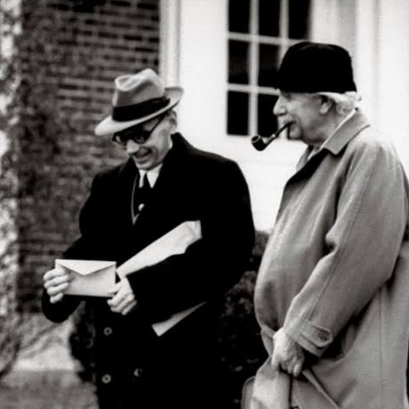
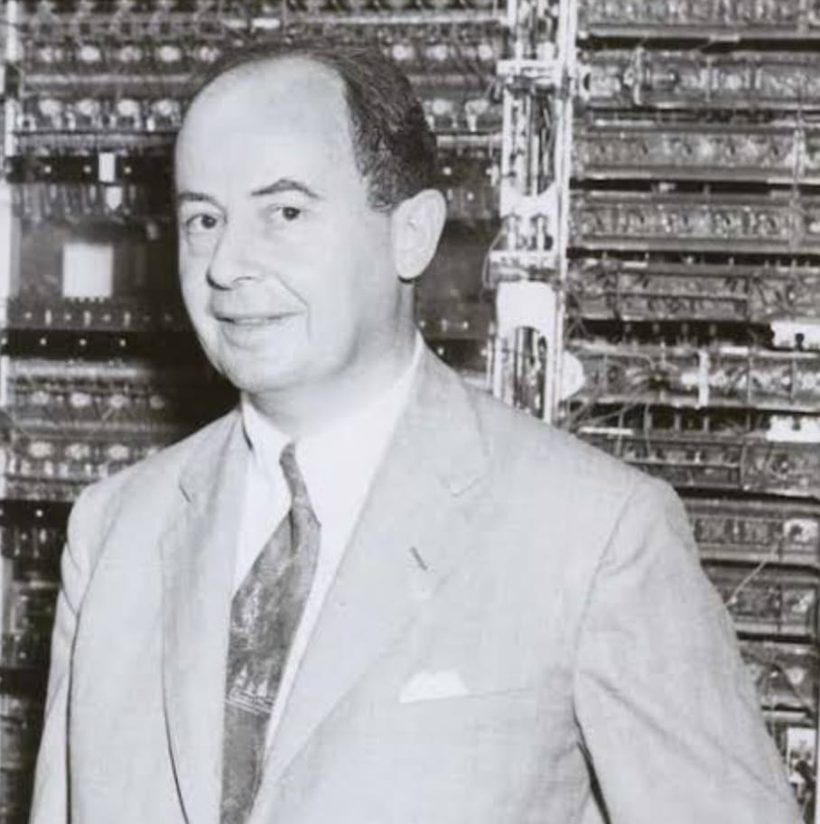
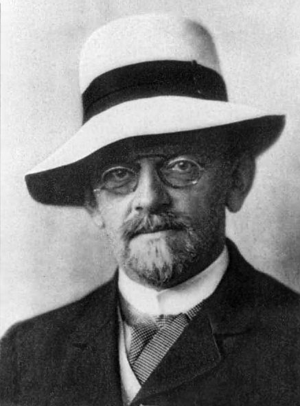
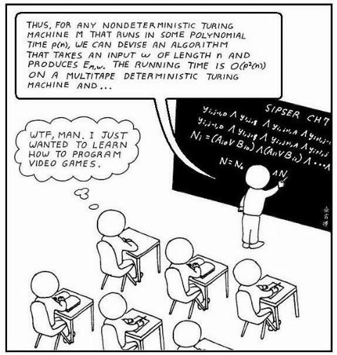

Aşağıda, Avusturya kökenli Amerikalı matematikçi Kurt Gödel'in 20 Mart 1956'da, o sırada kanserle boğuşan John von Neumann'a yazdığı mektubun çevirisi ve bu mektubun bilgisayar bilimindeki en büyük açık problemlerinden biri olan P vs NP sorusuyla bağlantısı anlatılmaktadır.


Princeton, 20 Mart 1956
Sayın von Neumann,
Büyük bir üzüntüyle hastalığınızı öğrendim. Bu haber bana oldukça beklenmedik geldi. Morgenstern, geçen yaz, geçirdiğiniz bir halsizlik nöbetinden bahsetmişti, ancak o zaman bunun önemli bir şey olmadığını düşünüyordu. Duyduğuma göre son aylarda köklü bir tedavi geçirmişsiniz; bu tedavinin istenildiği gibi başarılı olmasına ve şimdi daha iyi olmanıza sevindim. Umuyorum ve diliyorum ki durumunuz daha da iyiye gider ve mümkünse tıptaki en yeni keşifler tam bir iyileşmeye yol açar.
Duyduğuma göre artık kendinizi daha güçlü hissediyormuşsunuz; bu nedenle, izninizle sizin görüşünüzün beni çok ilgilendireceği bir matematiksel problem hakkında size yazmak istiyorum: Açıkça görülüyor ki, birinci dereceden yüklem mantığındaki her F formülü ve her n doğal sayısı için, F'in n uzunluğunda (uzunluk = sembol sayısı) bir kanıtı olup olmadığına karar veren bir Turing makinesi inşa edilebilir. Bunun için makinenin yapması gereken adım sayısı \Psi(F, n) ve \varphi(n) = \max_F \Psi(F, n) olsun. Soru şu: optimal bir makine için \varphi(n) ne kadar hızla büyür? Eğer gerçekten \varphi(n) \sim k \cdot n (hatta \sim k \cdot n^2) olan bir makine olsaydı, bunun son derece önemli sonuçları olurdu. Yani bu durum açık bir şekilde, Entscheidungsproblem karar verilemez olmasına rağmen bir matematikçinin evet/hayır soruları ile ilgili zihinsel işinin tamamen makine tarafından yerine getirilebileceği anlamına gelirdi. Sonuçta makine bir sonuç vermediğinde, n doğal sayısını o kadar büyük seçmek gerekirdi ki problem hakkında daha fazla düşünmenin anlamı kalmazdı. Ancak şimdi bana, \varphi(n) fonksiyonunun bu kadar yavaş büyümesi olasılık dahilindeymiş gibi geliyor. Çünkü \varphi(n) \geq k^n tahmini, Entscheidungsproblem'in çözümsüzlüğünün kanıtını genelleştirerek elde edilebilecek tek tahmin gibi görünüyor ve sonuçta \varphi(n) \sim k n (veya \varphi(n) \sim k n^2) yalnızca, deneme yanılma yöntemine kıyasla adım sayısının N'den \log N (veya (\log N)^2) düşürülebileceği anlamına geliyor. Ancak bu kadar güçlü azalmalar, karşılıklılık yasasının (law of reciprocity) tekrar tekrar kullanılmasıyla karesel kalan (quadratic residue) sembolünün hesaplanması gibi başka sonlu problemlerde de görülüyor. Örneğin bir sayının asal olup olmadığının belirlenmesine ilişkin durumun ve genel olarak sonlu kombinatorik problemlerde adım sayısının kaba kuvvet aramasına kıyasla ne ölçüde azaltılabileceğinin ortaya konulması ilgi çekici olacaktır.
\varphi özyinelemeli olmak üzere (\exists y)\varphi(y, x) şeklindeki problemler arasında çözülemezlik dereceleri olup olmadığına ilişkin Post probleminin, Richard Friedberg adlı oldukça genç bir adam tarafından pozitif yönde çözüldüğünü duyup duymadığınızı bilmiyorum. Çözüm oldukça zarif. Ne yazık ki Friedberg matematik okumayı değil, (görünüşe göre babasının etkisiyle) tıp okumayı düşünüyor. Bu arada, son zamanlarda ivme kazanan, analizin temellerini dallanmış tip teorisi (ramified type theory) üzerine inşa etme girişimleri hakkında ne düşünüyorsunuz? Paul Lorenzen'in Lebesgue ölçüm teorisine bu yaklaşımla ilerlediğinin muhtemelen farkındasınız. Ancak ben, analizin önemli kısımlarında ortadan kaldırılamayan yüklemsel olmayan (impredicative) kanıt yöntemlerinin ortaya çıktığına inanıyorum.
Şahsen sizden bir şeyler duymaktan çok mutlu olurum. Sizin için yapabileceğim bir şey olursa lütfen bana bildiriniz. En iyi dileklerimle ve eşinize selamlarımla,
Saygılarımla,
Kurt Gödel
Not: Size Amerikan hükümetinin verdiği ödül için içtenlikle tebriklerimi sunuyorum. Bu mektup anilada.com/notes/godel-letter.pdf adresinden alınmış ve Türkçeye çevrilmiştir.
P–NP Probleminin Öncüsü
20 Mart 1956'da, Avusturya kökenli Amerikalı matematikçi Kurt Gödel tarafından o sırada kanserle boğuşan John von Neumann'a yazılan bu mektup, içerdiği problemler açısından hem matematikçiler hem de bilgisayar bilimcileri için büyük önem taşımaktadır. Fakat von Neumann mektuba herhangi bir cevap yazmamıştır ve mektup yazıldıktan yaklaşık bir yıl sonra, 8 Şubat 1957'de kanser sebebiyle hayatını kaybetmiştir. Gödel, 1956'daki mektubunda, daha sonra Stephen Cook'un 1971'de yayımlanan "The Complexity of Theorem-Proving Procedures" adlı makalesinde açık biçimde formüle edilen P–NP probleminin öncüsü sayılabilecek bir soru sormuştur. Bu mektup, Gödel'in ileri görüşlülüğünü göstermektedir.
Gödel, mektubunda şu soruyu ortaya koyar: Birinci dereceden yüklem mantığında bir formül verildiğinde, bu formülün uzunluğu en fazla n olan bir kanıtının bulunup bulunmadığını belirleyecek bir Turing makinesi ne kadar hızlı olabilir? Böyle bir makinenin var olduğu açıktır; çünkü alfabedeki sembollerin n uzunluğundaki tüm dizilerini tek tek deneyerek bir kanıt arayan "kaba kuvvet" (brute-force) yöntemine dayalı bir Turing makinesi kurulabilir. Ancak bu yöntem üstel zamanda çalışmaktadır.

Gödel'in asıl sorusu ise şudur: Acaba bu problemi polinom zamanda çözebilen daha verimli bir Turing makinesi olabilir mi? Ayrıca Gödel, mektubunda Almanca "karar verme problemi" anlamına gelen ve 1928 yılında David Hilbert ile Wilhelm Ackermann tarafından ifade edilen Entscheidungsproblem'den de bahseder. Entscheidungsproblem, birinci dereceden yüklem mantığında verilen herhangi bir cümlenin geçerli (valid) olup olmadığına karar veren tek bir algoritmanın var olup olmadığını sorgular. Bu problem, 1936 yılında Alonzo Church ve Alan Turing tarafından olumsuz yönde çözülmüştür: birinci dereceden mantıkta geçerlilik problemi karar verilemezdir; yani bütün cümleler için doğru cevabı veren sonlu bir algoritma yoktur.
Bu yazıda, yüklem mantığına girmeden, önermeler mantığında verilen n değişkenli bir formülü doğru yapan bir atamanın olup olmadığına karar veren Turing makinesini ele alacak ve Cook–Levin teoreminin bir kanıtını vereceğiz.
Tanımlar
Öncelikle birkaç tanımla başlayalım.
- Eğer a = 1 ve b = 1 ise a \land b = 1; diğer tüm durumlarda a \land b = 0 olur.
- Eğer a = 1 veya b = 1 ise a \lor b = 1; yalnızca a = 0 ve b = 0 ise a \lor b = 0 olur.
- Eğer a = 0 ise \lnot a = 1; eğer a = 1 ise \lnot a = 0 olur.
Eğer \varphi formülü n değişkenliyse (yani değişkenleri u_1, \dots, u_n ise), o zaman herhangi bir u \in \{0,1\}^n ataması için \varphi(u) ifadesi, \varphi formülünün değişkenlerine u içindeki değerler atandığında aldığı değeri gösterir. Eğer \varphi(u) = 1 olacak bir u varsa \varphi formülüne satisfiable (sağlanabilir) denir. Verilen bir Boole formülünün sağlanabilir olup olmadığını belirleme problemine SAT (satisfiability) problemi denir. SAT kümesini şöyle tanımlayalım:
- Q sonlu durumlar kümesi,
- \Sigma bant alfabesi olup \# (başlangıç sembolü) ve \sqcup (boş sembol) içerir,
- q_0 \in Q başlangıç durumu,
- H \subseteq Q durma durumları kümesi; makine q \in H durumuna ulaştığında işlem sona erer,
- \delta : (Q \setminus H) \times \Sigma \to Q \times \Sigma \times \{-1, +1\} geçiş fonksiyonu, her adımda makinenin yeni durumunu, bant üzerine yazılacak sembolü ve kafanın hareket yönünü belirler.
- Her q \in Q \setminus H için \delta(q, \#) = (p, \#, +1); yani başlangıç sembolü üzerindeki kafa her zaman sağa hareket eder. Bu, kafanın bandın solundan dışarı çıkmasını engeller.
- Her q \in Q \setminus H ve a \in \Sigma için \delta(q, a) = (p, b, d) ise b \neq \#; bu, çalışma sırasında başlangıç sembolünün başka bir kareye yazılmasını engeller ve bant yapısının korunmasını sağlar.
Örnek. Turing makinemiz M = (\{q_0, q_1, q_{\text{kabul}}\}, \{0,1,\#,\sqcup\}, q_0, \{q_{\text{kabul}}\}, \delta) olsun. Basit bir geçiş fonksiyonu:
| Durum | Sembol | δ(Durum, Sembol) |
|---|---|---|
| q₀ | # | (q₁, #, +1) |
| q₁ | 0 | (q₁, 0, +1) |
| q₁ | 1 | (q₁, 1, +1) |
| q₁ | ⊔ | (q_kabul, ⊔, +1) |
Bandın başlangıç durumu \#010\sqcup\sqcup\cdots şeklindedir. Kafa başlangıçta \# üzerindedir; \delta fonksiyonuna göre sağa kayarak girdiyi okur ve boş sembole (\sqcup) ulaştığında kabul durumuna (q_{\text{kabul}}) geçerek durur. Durma durumlarında \delta tanımlı olmadığından tabloda q_{\text{kabul}} için satır bulunmaz.
Şimdi amacımız, verilen n değişkenli (u_1, \dots, u_n) bir Boole formülü \varphi'nin SAT kümesinde olup olmadığını test etmek için gereken adım sayısının, yani çalışma süresinin, girdi uzunluğu ile ilişkisini incelemek. Elbette Gödel'in mektubunda bahsedildiği gibi tüm u_i'ler için 0 ve 1 kombinasyonlarını deneyerek bütün olasılıkları kontrol edebiliriz; fakat bu yöntem 2^n durum içerir. Dikkat edilmesi gereken bir diğer nokta da, verilen bir \varphi ve u \in \{0,1\}^n için \varphi(u) değerini hesaplayan bir makinenin ne kadar süre çalıştığıdır.
Şimdi bu problemi daha biçimsel bir şekilde ele alalım.
- M(x) en fazla P(n) adımda durur ve
- M(x) = 1 \iff x \in L
- her x \in \Sigma^* için x \in L \iff \exists\, u \in \Sigma_1^{Q(n)} öyle ki M(x,u) = 1, ve
- her x \in \Sigma^* ve her u \in \Sigma_1^{Q(n)} için M(x,u) en fazla P(n+Q(n)) adımda durur
Şimdi bu tanımların ne anlattığını açıklayalım. Buradaki \Sigma^* kümesi, \Sigma alfabesinin sembolleriyle oluşturulmuş sonlu uzunluktaki dizilerin kümesidir. SAT problemi için \Sigma; \land, \lor, \lnot, (, ) sembolleri ile değişkenleri kodlamak üzere x, 0 ve 1 sembollerinden oluşur: i indisli değişken, x sembolünün ardından i'nin ikilik gösterimi yazılarak kodlanır. (Aksi hâlde x_1, x_2, \dots dizisi sonsuz sayıda sembol gerektirir ve \Sigma sonlu olmaz.) \Sigma_1 ise doğruluk atamalarını kodlamak için \{0,1\} olarak alınır. NP tanımındaki u'ya sertifika (certificate) veya tanık (witness) denir. Eğer L \in P ise, sertifikayı hiç okumayan bir makine alarak L \in \mathrm{NP} olduğu kolayca görülür; yani P \subseteq \mathrm{NP}'dir. Buradaki NP adı "nondeterministik polinom zaman"dan gelir, fakat bu yazıda nondeterministik makinelerin ayrıntılarına girmeyeceğiz.
- f polinom zamanda hesaplanabilir,
- her x \in \Sigma_1^* için x \in L_1 \iff f(x) \in L_2,
Cook–Levin Teoremi
Stephen Cook, 1971 yılında yayımladığı The Complexity of Theorem-Proving Procedures adlı makalesinde, her NP dilinin SAT'a polinom zamanda indirgenebileceğini kanıtlamıştır. SAT, NP-tam olduğu bilinen ilk problemdir. Şimdi bu teoremin bir kanıtını sunalım.
1. Kısım: SAT ∈ NP. Sertifika alfabesini \Sigma_1 = \{0,1\} alalım. Girdi olarak n değişkenli bir Boole formülü \varphi ve bir u \in \{0,1\}^n alan, \varphi'nin değişkenlerine u'nun karşılık gelen bitlerini yerleştirip formülü aşağıdan yukarıya değerlendiren ve \varphi(u) değerini çıktı veren bir deterministik makine M vardır. M, formülü sabit sayıda taramayla değerlendirdiğinden |\varphi|'nin bir polinomu kadar adımda durur. Şimdi:
- \varphi \in \mathrm{SAT} ise, tanım gereği \varphi(u) = 1 olan bir u \in \{0,1\}^n vardır; bu u için M(\varphi, u) = 1 olur.
- Tersine, M(\varphi, u) = 1 olan bir u \in \{0,1\}^n varsa, \varphi(u) = 1 olduğundan \varphi sağlanabilirdir, yani \varphi \in \mathrm{SAT}.
Böylece NP tanımının her iki koşulu da sağlanır ve \mathrm{SAT} \in \mathrm{NP} olur.
2. Kısım: her L \in \mathrm{NP} için L \leq_p \mathrm{SAT}. L bir NP dili, \Sigma_1 bu dilin alfabesi, \Sigma_2 sertifikaların alfabesi ve M, NP tanımındaki özelliği sağlayan deterministik ve polinom zamanlı Turing makinesi olsun; yani n = |x| ve Q bir polinom olmak üzere her x \in \Sigma_1^* için
Amacımız, x verildiğinde polinom zamanda üretilebilen bir Boole formülü \varphi_x kurmaktır; öyle ki
Böyle bir \varphi_x kurulursa, f(x) = \varphi_x dönüşümü polinom zamanda hesaplanabilir bir indirgeme olur ve L \leq_p \mathrm{SAT} elde edilir.
\Sigma = \Sigma_1 \cup \Sigma_2 \cup \{\#\} \cup \{\sqcup\} ve \Sigma = \{\sigma_1, \dots, \sigma_m\} olsun; burada \sigma_1 = \# ve \sigma_2 = \sqcup olduğunu varsayalım. Q = \{q_0, \dots, q_r\}, M'nin durumlar kümesi ve q_0 başlangıç durumu olsun. I \subseteq \{0,\dots,r\} durma durumlarının, I_{\text{kabul}} \subseteq I ise kabul durumlarının indis kümesi olsun; K = \{q_i : i \in I\}, M'nin durma durumları kümesidir. \delta : (Q \setminus K) \times \Sigma \to Q \times \Sigma \times \{-1,+1\}, M'nin geçiş fonksiyonudur.
Bandın başlangıç içeriği şöyledir: 1. karede \#, 2,\dots,n+1 karelerinde x'in sembolleri, n+2,\dots,n+Q(n)+1 karelerinde sertifikanın sembolleri ve sonrasında boş semboller bulunur. Kullanılan başlangıç bant uzunluğu w = n + Q(n) + 1 olur. L \in \mathrm{NP} olduğundan M, P polinomu için en fazla P(n+Q(n)) adımda durur.
diyelim. T, n'nin bir polinomudur; makine en fazla T-1 adım attığından ve kafa 1. kareden başladığından bandın yalnızca ilk T karesini görebilir. Böylece tüm hesaplamayı T \times T boyutunda bir tablo ile betimleyebiliriz. Şimdi Boole değişkenlerini tanıtalım:
- P^i_{s,t} (1 \le i \le m,\ 1 \le s,t \le T): doğrudur ancak ve ancak t. adımda bandın s. karesindeki sembol \sigma_i ise.
- Q^i_t (0 \le i \le r,\ 1 \le t \le T): doğrudur ancak ve ancak M, t. adımda q_i durumunda ise.
- S_{s,t} (1 \le s,t \le T): doğrudur ancak ve ancak t. adımda M'nin kafası s. kareyi tarıyorsa.
(Burada t=1, hesaplamanın başlangıç konfigürasyonuna karşılık gelir.) Kuracağımız formül şu biçimdedir:
\varphi_{\text{kare}}, her adımda bandın her karesinde tam olarak bir sembol bulunduğunu ifade eder:
Buradaki ilk ifade, t. adımda bandın s. karesinde en az bir sembol bulunduğunda 1, aksi hâlde 0 değerini verir. İkinci ifade ise o karede birden fazla sembol varsa 0, aksi hâlde 1 verir. Böylece her karede tam olarak bir sembol olduğu denetlenir. Benzer şekilde \varphi_{\text{durum}}, makinenin her adımda tam olarak bir durumda olduğunu; \varphi_{\text{kafa}} ise kafanın her adımda tam olarak bir kareyi taradığını ifade eder:
\varphi_{\text{başlangıç}}, başlangıç konfigürasyonunu betimler: makine q_0 durumundadır, kafa 1. karededir, bandın başında \# ve ardından girdi x yazılıdır, sertifikaya ayrılmış karelerde \Sigma_2'den bir sembol bulunur ve geri kalan kareler boştur. Girdinin sembolleri sırasıyla \sigma_{i_1}, \sigma_{i_2}, \dots, \sigma_{i_n} olsun. O hâlde
\varphi_{\text{geçiş}}, durmayan her konfigürasyonda geçiş fonksiyonunun doğru uygulandığını ifade eder. Her i \notin I ve her j için \delta(q_i, \sigma_j) = (q_{i'}, \sigma_{j'}, d_{ij}) olsun. O hâlde
\varphi_{\text{durma}}, makine bir durma durumuna geldiğinde konfigürasyonun T. adıma kadar sabit kalmasını (yani durma durumlarının kendine döngü yapmasını) sağlar. Bu olmadan, T'den önce duran hesaplamalar için T. adımdaki durumu sorgulamak anlamsız olurdu:
\varphi_{\text{tutarlılık}}, kafanın bulunmadığı karelerin sembollerinin değişmediğini ifade eder:
\varphi_{\text{kabul}}, T. adımda makinenin kabul durumlarından birinde olduğunu ifade eder:
Doğruluk. İndirgemenin doğru olduğunu, yani x \in L \iff \varphi_x \in \mathrm{SAT} olduğunu görelim.
(⇒) x \in L olsun. O hâlde M(x,u) = 1 olan bir u \in \Sigma_2^{Q(n)} vardır. M'nin (x,u) girdisi üzerindeki hesaplamasını T adıma kadar (durduktan sonra konfigürasyonu tekrarlayarak) uzatalım ve P^i_{s,t}, Q^i_t, S_{s,t} değişkenlerine bu hesaplama tablosundaki gerçek değerleri atayalım. Bu atama, yukarıdaki yedi bileşenin her birini tanım gereği sağlar; ayrıca hesaplama kabul ettiğinden \varphi_{\text{kabul}} de sağlanır. Dolayısıyla \varphi_x sağlanabilirdir.
(⇐) \varphi_x'i sağlayan bir atama olsun. \varphi_{\text{kare}} \land \varphi_{\text{durum}} \land \varphi_{\text{kafa}} sayesinde bu atama, her t için iyi tanımlı tek bir konfigürasyon belirler. \varphi_{\text{başlangıç}}, 1. konfigürasyonun \# x\, u\, \sqcup \cdots biçiminde olduğunu söyler; burada u, sertifika karelerine atanan sembollerden okunur ve u \in \Sigma_2^{Q(n)}'dir. t üzerinden tümevarımla, \varphi_{\text{geçiş}} \land \varphi_{\text{durma}} \land \varphi_{\text{tutarlılık}} her t < T için t+1. konfigürasyonun t. konfigürasyondan \delta ile (veya durma durumundaysa özdeş olarak) elde edildiğini garanti eder. M deterministik olduğundan bu dizi, M'nin (x,u) üzerindeki tek hesaplamasıdır. Son olarak \varphi_{\text{kabul}}, T. adımda bir kabul durumunda olunduğunu söyler; yani M(x,u) = 1. O hâlde x \in L'dir.
Uzunluk. Şimdi formülün uzunluğunu hesaplayalım. m = |\Sigma| ve r+1 = |Q| sabit olduğundan: \varphi_{\text{kare}} için O(T^2), \varphi_{\text{durum}} için O(T), \varphi_{\text{kafa}} için O(T^3), \varphi_{\text{başlangıç}} için O(T), \varphi_{\text{geçiş}} için O(T^2), \varphi_{\text{durma}} için O(T^2), \varphi_{\text{tutarlılık}} için O(T^3) ve \varphi_{\text{kabul}} için O(1) elde edilir. Toplam uzunluk O(T^3) olup T bir polinom olduğundan \varphi_x'in uzunluğu n'nin bir polinomudur; üstelik \varphi_x bu betimlemeden mekanik olarak, yine polinom zamanda yazılabilir.
Böylece her L \in \mathrm{NP} için L \leq_p \mathrm{SAT} olduğu gösterilmiş oldu. Birinci kısımla birlikte, SAT dilinin NP-tam olduğu kanıtlanmıştır. ∎
Milyon Dolarlık Problem
Cook (1971) makalesinde, biçimsel sistemlerde kanıtların polinom zamanda doğrulanıp doğrulanamayacağını incelemiş ve her NP probleminin SAT'a indirgenebileceğini göstermiştir. Bu çalışmanın hemen ardından Karp (1972), Reducibility Among Combinatorial Problems adlı makalesinde 21 klasik kombinatoryal problemin aynı sınıfta olduğunu göstermiş, bunları birbirlerine polinom zamanlı indirgemelerle bağlamış ve bugün kullandığımız NP-tam terminolojisini yerleştirmiştir. Bu problemler arasında Hamiltonian Path, Graph Coloring ve 0–1 Integer Programming gibi problemler de yer almaktadır. Bu iki çalışma, NP-tamlık teorisinin temel taşlarını oluşturmuş ve P vs NP problemi için zemin hazırlamıştır.
Gödel'in 1956 tarihli mektubunda bahsettiği fikir, bir biçimsel sistem A için aşağıdaki dili tanımlamaktır:
Bir teorem \varphi ve uzunluğu n'den küçük bir kanıt verildiğinde, bunun geçerli bir kanıt olup olmadığına karar verebilen polinom zamanlı bir Turing makinesi vardır; kanıtın kendisi sertifika olarak alınabildiğinden bu dil NP'dedir. Dahası, bu dilin NP-tam olduğu da gösterilebilir. Dolayısıyla Gödel'in sorduğu soru, P = \mathrm{NP} sorusuna denktir.
P ile NP sınıflarının eşit olup olmadığı problemi hâlen çözülmemiştir ve P vs NP problemi olarak bilinir. Bu problem, 2000 yılında Clay Matematik Enstitüsü tarafından seçilen yedi Milenyum Problemi'nden biridir ve problemi çözen kişiye 1 milyon dolar ödül verilecektir.
Felsefi Sonuçlar ve Kriptografi
P vs NP probleminin bazı felsefi sonuçları vardır: bir problemin çözümünü bulmak, bir çözüm verildiğinde onun doğruluğunu denetlemekten genellikle daha zor görünür. Örneğin Beethoven'ın sonatalarını bestelemek, o besteyi anlamaktan daha zordur; ya da bir teoremi kanıtlamak, kanıt verildiğinde onun doğruluğunu kontrol etmekten daha zordur. Bir kanıtın doğruluğunu denetlemek için verilen adımların aksiyomlardan veya geçerli çıkarım kurallarından türetilip türetilmediği incelenir; ancak kanıtı bulmak çok daha karmaşıktır. Bu gibi sezgiler, P \neq \mathrm{NP} olduğunu düşündürmektedir.
Kurt Gödel, 1956 yılında John von Neumann'a yazdığı mektupta matematiksel teorem ispatlama sürecinin makinelere devredilip devredilemeyeceğini sorgulamıştır. Gödel'in öngörüsü, P = \mathrm{NP} problemine işaret etmektedir. Eğer bu eşitlik sağlanırsa, doğruluğu kolayca test edilebilen matematiksel problemler aynı zamanda polinom zamanda çözülebilir hale gelir ve yaratıcı teorem ispatı süreci algoritmik bir rutine dönüşür.
RSA şifreleme algoritması, büyük sayıları asal çarpanlarına ayırmanın algoritmik zorluğuna dayanır. Çarpanlara ayırma problemi NP sınıfındadır, çünkü bir sayının çarpanları verildiğinde, bu çarpanların çarpımının orijinal sayıyı verip vermediği polinom zamanda basitçe doğrulanabilir. Eğer P = \mathrm{NP} olduğu kanıtlanırsa, NP sınıfındaki tüm problemler P sınıfına dahil olacağından, çarpanlara ayırma işlemi de hızlıca çözülebilir bir hale gelir ve RSA tamamen kırılması ihtimaller dahilindedir.
Bununla birlikte, çarpanlara ayırma problemi bilinen NP-tam problemler arasında yer almaz. Teorik bilgisayar biliminde bu problemin NP-orta (NP-intermediate) sınıfında olduğu, yani ne P sınıfı kadar kolay ne de NP-tam problemleri kadar zor olduğu düşünülmektedir. Bu nedenle, P \neq \mathrm{NP} olduğu kanıtlansa dahi, çarpanlara ayırma problemi pekala P sınıfının içinde yer alabilir. Bu teorik gerçek, sadece P \neq \mathrm{NP} varsayımının RSA sistemlerinin güvenliğini garanti edemeyeceğini gösterir.
Asallık testi (bir sayının asal olup olmadığını belirleme) ise hesaplama tarihinde tamamen farklı bir evrim geçirmiştir. Gödel'in mektubunun yazıldığı 1956 yılında bu problemin zorluk derecesi ve karmaşıklık sınıfı henüz net olarak bilinmiyordu. Ancak 2002 yılında Manindra Agrawal, Neeraj Kayal ve Nitin Saxena tarafından yayınlanan AKS asallık testi, bu problemin herhangi bir varsayıma dayanmaksızın, deterministik polinom zamanda çözülebileceğini kanıtlamıştır. Bu gelişme, asallık testinin P = \mathrm{NP} varsayımına ihtiyaç duymadan doğrudan P sınıfında yer aldığını kanıtlamıştır.

Bu konuda Austin Texas Üniversitesi'nden teorik bilgisayar bilimcisi Scott Aaronson şöyle demektedir:
Eğer P = NP olursa, dünya düşündüğümüzden çok farklı bir yer olurdu. "Yaratıcı sıçramaların" (creative leaps) özel bir değeri kalmazdı; bir problemi çözmek ile çözümü bulduktan sonra tanımak arasında temel bir fark olmazdı. Bir senfoniyi kavrayabilen herkes Mozart olurdu; adım adım bir argümanı takip edebilen herkes Gauss; iyi bir yatırım stratejisini tanıyabilen herkes Warren Buffett olurdu. Scott Aaronson
Kaynakça
- S. Aaronson, P =? NP, in J. F. Nash Jr. and M. Th. Rassias (eds.), Open Problems in Mathematics, Springer, pp. 1–122, 2016.
- M. Agrawal, N. Kayal and N. Saxena, PRIMES is in P, Annals of Mathematics, Vol. 160, No. 2, pp. 781–793, 2004.
- S. Arora and B. Barak, Computational Complexity: A Modern Approach, Cambridge University Press, 2009.
- Ahmet Çevik, Matematik Felsefesi ve Matematiksel Mantık, Nesin Yayıncılık, 2019. ISBN: 978-605-2780-44-2.
- A. Church, A Note on the Entscheidungsproblem, The Journal of Symbolic Logic, Vol. 1, No. 1, pp. 40–41, 1936.
- S. A. Cook, The Complexity of Theorem-Proving Procedures, Proceedings of the Third Annual ACM Symposium on Theory of Computing (STOC '71), pp. 151–158, 1971.
- S. A. Cook, The P versus NP Problem, Clay Mathematics Institute, 2000.
- Clay Mathematics Institute, Millennium Prize Problems: P vs NP Problem, 2000.
- M. R. Garey and D. S. Johnson, Computers and Intractability: A Guide to the Theory of NP-Completeness, W. H. Freeman, 1979. ISBN: 0-7167-1045-5.
- Kurt Gödel, Kurt Gödel'in John von Neumann'a Mektubu, Princeton, 20 Mart 1956.
- R. M. Karp, Reducibility Among Combinatorial Problems, in R. E. Miller and J. W. Thatcher (eds.), Complexity of Computer Computations, Plenum Press, New York, pp. 85–103, 1972.
- Donald E. Knuth, The Art of Computer Programming, Volume 4A: Combinatorial Algorithms, Part 1, Addison-Wesley, 2011. ISBN: 0-201-03804-8.
- L. A. Levin, Universal Sequential Search Problems, Problemy Peredachi Informatsii, Vol. 9, No. 3, pp. 115–116, 1973.
- H. R. Lewis and C. H. Papadimitriou, Elements of the Theory of Computation (2nd Edition), Prentice Hall, 1998.
- C. H. Papadimitriou, Computational Complexity, Addison-Wesley, 1994.
- M. Sipser, Introduction to the Theory of Computation (3rd Edition), Cengage Learning, 2012.
- A. M. Turing, On Computable Numbers, with an Application to the Entscheidungsproblem, Proceedings of the London Mathematical Society, Series 2, Vol. 42, pp. 230–265, 1936.
- Grant Sanderson, Computer Science's Biggest Mystery – P=NP Problem, YouTube, 2025.
Yorumlar
Beğenmek ya da yorum yazmak için GitHub hesabıyla giriş yapmanız gerekir.